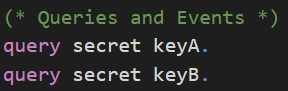
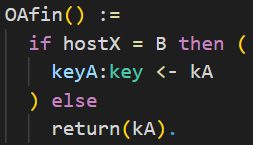
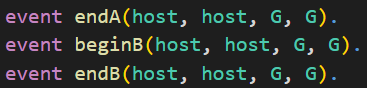
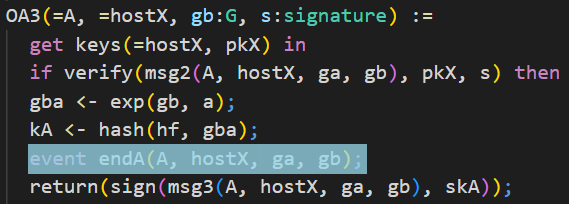
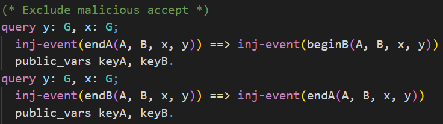
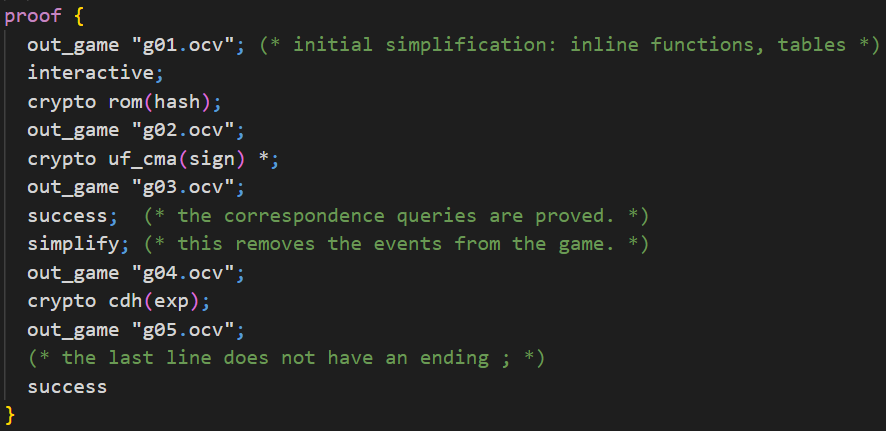

📝 Self-Study
In this chapter you are welcome to have a look at how CryptoVerif proves the authenticated key exchange protocol signed Diffie-Hellman secure in a multi-party, multi-session environment.
We will not have an in-depth look at every line of the input file as in the chapter First Proof. You will recognize many similar structures. We will have a look at some code snippets discussing the most important differences.
One interesting aspect, for example, is how CryptoVerif excludes malicious accepts.
Further, in this proof you can see how CryptoVerif can be guided through the proof (interactive mode).
You can find the input file signedDH.ocv here.
Secrecy of session key
The queries to prove secrecy of to session key keyA and keyB have the same syntax as we have seen before to prove the secrecy of bit b.

The difference here is that the values of keyA and keyB are depending on the messages the communicating parties have sent each other (key agreement).
We only want to prove secrecy in case the two honest parties A and B interacted. There is a problem where another party besides B can communicate with party A and trivially know the agreed key. Because of this you can see a little trick in the following code snippet. The value of the agreed key is stored in kA at first. Only if the other party is B then the value of keyA is set to kA. Otherwise, kA will be directly leaked.

Events
talk about events
trigger: "record event"
In CryptoVerif we can also use events. You can see the declaration of the events endA, beginB, and endB in the following. They also have parameters of the given types associated to them.


From the code depicted above you can also understand that the single messages of a protocol are defined as oracles in CryptoVerif.
Exclude malicious accept
talk about query using events (exclude malicious accept)
Now we want CryptoVerif to proof that a malicious accept is not possible. For this we write queries using the events endA, beginB, and endB shown in the previous section.

In the upper query we want to prove that for each event endA there exists one distinct event beginB with the same parameters. This should be proven even if the shared secrets keyA and keyB are leaked. We indicate this using the keyword public_vars.
To be more precise, when this query is proven it means that party A can authenticate party B, even if any shared secrets leaks.
The lower query is the other way around. We want to show that B can authenticate A, even if any shared secret is leaked. For each event endB there exists one distinct event endA with the same parameters.
Interactive mode
talk about interactive mode (guided)
refer back to IND-CPA equivalence (use ind_cpa(enc) in interactive mode)
